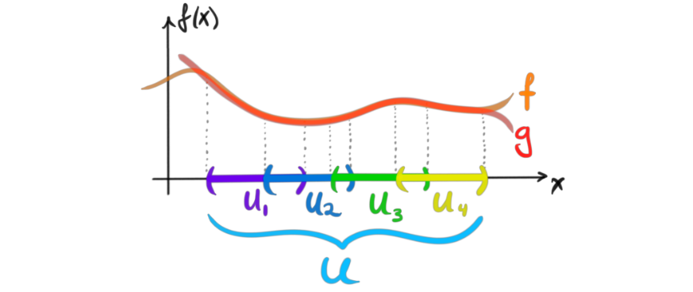
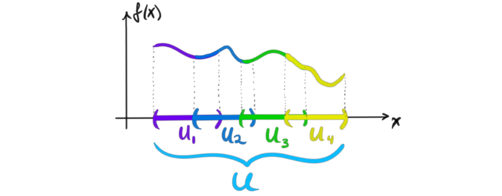

This summer I’m participating in Ravi Vakils pseudocourse on algebraic geometry, AGITTOC. Hence this summer serves as a wonderful opportunity to learn and write about cool mathematics. For long I have wanted to dive deeper into this abstract topic after just dipping my toes in during my bachelor thesis, and now it is time. Ravi though us in the first lecture that we shouldn’t study abstract objects without a cause, i.e. we need to ask ourselves why we want to learn about the objects, or the mathematics that lies ahead. I want to study algebraic geometry because I really like algebraic topology, and a lot of the concepts and notions of algebraic topology are abstracted in algebraic geometry, and several concepts gets a new viewpoint or gets some new tools to use to study them. I thought I would start off by discussing one of the fundamental objects of study in algebraic geometry, namely sheaves. These objects abstract, concretize and formalize several other mathematical notions, some of which we already know. One of these in particular is sheaf cohomology which can be viewed to generalize both singular, deRham and Cech cohomology. We are going to look into this cohomology theory in a later post.
When studying topology, it becomes clear pretty early that local information sewn together is often more interesting than global information. Manifolds are more interesting than Euclidean space, local sections of a vector bundle are more interesting global sections and fiber bundles are more interesting than the Cartesian product of spaces. By “more interesting” I mean more complicated, less restrictive and a more “rich” theory. Sheaves are a very good way of describing such types of local information and how this information relates to the local information elsewhere and the global information. They do not inherently describe spaces parameterized by other spaces like the vector and fiber bundles, but instead abstracts and concretizes the study of functions on a space.
Pre sheaves
The main meat of the definition of a sheaf is formalized in the notion of a pre-sheaf. A pre-sheaf concerns the local information on a space we talked about previously, and how the information relate to information even more locally. Sheaves will then incorporate two additional descriptions about how the information related across local areas, and how we can glue local information together, but more on that a bit later.
Before we get to the proper definition, we consider an example, or a kind of motivating story. Many of the sheaves and pre-sheaves we will care about in algebraic geometry will be about functions on spaces as mentioned in the introduction. Thus this will be our motivating example. We consider continuous real-valued functions on some subset of the real line. Let $U\subset \mathbb{R}$ and $C(U)$ be the set of continuous functions on $U$. Since they take value in the real numbers we can express these functions by their graphs in the real plane. Let $f \in C(U)$, for example the following graph.
If we restrict $f$ to a smaller subset $V\subset U$ it is still a continuous function on that subset, i.e. $f_{|V}\in C(V)$.
But, if we have a non-continuous function on U, this function could still be continuous on V\subset U, i.e. $f\notin C(U) \nRightarrow f\notin C(V)$. We can see this by the following picture.
Since together with the above property, non-continuous functions on $V$ are also non-continuous on $U$ we get a well defined restriction map $(-)_ {|V}: C(U) \rightarrow C(V)$. If we restrict to the same subset $U\subset U$ we see that the restriction map $(-)_{|U}$ is actually the identity map $id_U$. If we instead continue this process one more time, i.e. with a set $W\subset V\subset U$, then we would get restriction maps $C(U)\rightarrow C(V) \rightarrow C(W)$. If we have a continuous function on $U$, say f, then we know $(f_{|V})_ {|W} = f_{|W}$, and hence we know that the following triangle commutes
These are actually all the properties we want to mimic when defining a pre-sheaf. So when you now read the definition, you have a concrete example in your intuition-bank! Since we said that pre-sheaves abstract the notion of functions on a space, we could form an intuitive definition of a pre-sheaf to be sets of elements associated to a topological space that behave similarly to the sets of continuous functions on the space. This is actually not very far from the precise definition which we now finally have arrived at.
Definition (pre-sheaf): Let $X$ be a topological space, and $\mathscr{C}$ some category. A $\mathscr{C}$-valued pre-sheaf $\mathcal{F}$ on $X$ is an assignment of an object $A$ in $\mathscr{C}$ to every open subset $U\subset X$, i.e. $\mathcal{F}(U) = A \in \mathscr{C}$, such that for every inclusion $V \hookrightarrow U$ there is a morphism $res_{V\subset U}: \mathcal{F}(U)\rightarrow \mathcal{F}(V)$, called the restriction, satisfying the following two axioms.
- The restriction $res_{U\subset U} = id_U$
- If we have subsets $W\subset V\subset U$, then $res_{W\subset V} \circ res_{V\subset U} = res_{W\subset U}$, i.e. a commutative diagram
The sets $\mathcal{F}(U)$ are called the sections of $\mathcal{F}$ over $U$.
This construction looks and feels very functorial in nature, but how can we discuss $\mathcal{F}$ as a functor if our domain is just a topological space? Well, it turns out that every topological space has the structure of a category in exactly the way we need. Recall that a topological space is a set $X$ together with a topology $T$ on $X$. This topology determines which subsets we decide to be open in $X$. We let these open sets be the objects of our category. For the morphisms, we let there be a single arrow $V\rightarrow U$ between two open sets, if and only if $V\subset U$. We then automatically have an identity morphism for every object, and composition is well defined and is associative. We call this category $O(X)$, for the category of open sets on $X$.
We can then equivalently define a $\mathscr{C}$-valued pre-sheaf on a topological space $X$ to be a contravariant functor $\mathcal{F}:O(X)\rightarrow \mathscr{C}$. Usually $\mathscr{C}$ will be the category of sets, the category of Abelian groups, the category of rings or the category of modules over a ring. When we have these more specific categories, we call a pre-sheaf for example a pre-sheaf of Abelian groups on $X$, instead of an $Ab$-valued pre-sheaf. The same goes for case with rings and modules. Pre-sheaves, and sheaves of rings will be especially important when we later are going to study schemes.
Sheaves
As said earlier, sheaves are like pre-sheaves that incorporate two additional descriptions about how information relates across local areas, and how we can glue local information together. To motivate these additional axioms, we again use the motivating example that we used before the definition of a pre-scheme, namely the continuous functions on a subset $U$ of the real line $\mathbb{R}$.
If we have an open cover ${U_i}$ of $U$ we want to study how functions on each of the sets in the cover can give us information about functions on the whole of $U$, and how restricting the functions can tell us information about the function globally. Let $f, g \in C(U)$ such that their restriction to the sets in the cover are equal, i.e. $f_{|U_i} = g_{U_i}$ for all sets $U_i$ in the cover.

Then we can see that the functions must be equal on the entire set $U$, i.e. if $f_{|U_i} = g_{U_i}$ for all $U_i$, then $f=g$ on $U$. This property, that the function is determined by it’s restrictions to an open cover, is called the uniqueness axiom and will be one of the extra features of a sheaf. What about the other direction? If we have a function on every set in the cover that agrees on their overlaps, do we then have a function on the entire set? For these continuous functions the answer is yes.

If we just put all the functions together, we still get a continuous function. The key piece for this working is that the functions agree on the overlaps, i.e. they are equal on every intersection. More formally, if we have functions ${f_i}$ on the $U_i$‘s such that $(f_i){|U_i , \cap U_j} = (f_j){|U_i, \cap U_j}$ for all $i$ and $j$, then there is a continuous function $f$ on $U$ such that $f_{|U_i} = f_i$. This property, that we can put together functions defined locally to form functions globally, is called the glueability axiom, and will be the second extra feature of a sheaf.
In the definition of a pre-sheaf, we could be very general, and allow values in every category $\mathscr{C}$. As we have seen in the example of the two extra axioms above, it looks almost unavoidable to actually use elements to talk about the axioms, and hence we need to have that $\mathscr{C}$ is a concrete category, i.e. a category in which the objects consists of elements. It is possible to do this more generally without discussing elements, but I don’t quite understand it yet. The categories we are interested in are all concrete anyway, and I find the definition using elements to be more intuitive, and more in sync with the motivating intuition-building example we just gave. Hence this is the definition we focus on.
Definition (sheaf): Let $X$ be a topological space. A $\mathscr{C}$-valued sheaf $\mathcal{F}$ of $X$ is a $\mathscr{C}$-valued pre-sheaf such that the two additional following axioms hold:
-
(Uniqueness). Let ${U_i}$ be an open cover of $U$ and $f,g \in \mathcal{F}(U)$. If $res_{U_i , \subset U}(f) = res_{U_i , \subset U}(g)$ for all $U_i$ in the cover, then $f=g$. The application of the restriction morphism $res_{V \subset U}$ to the element f is often instead written as $f_{|V}$ to be more familiar. In that notation, we have if $f_{|U_i} = g_{|U_i}$ for all $U_i$ in the cover, then $f=g$.
-
(Glueability). Let ${U_i}$ be an open cover of $U$ and $f_i \in \mathcal{F}(U_i)$ such that $res_{U_i ,\cap U_j\subset U_i}(f_i) = res_{U_i ,\cap U_j \subset U_j}(f_j)$ for all of the functions $f_i$ and all of the open sets $U_i$ in the cover. Then there exists an element $f\in \mathcal{F}(U)$ such that $res_{U_i , \subset U}(f)=f_i$ for all functions $f_i$ and open sets $U_i$ in the covering. In the alternative notation, we have that if $(f_i)_{|U_i\cap U_j} = (f_j)_{|U_i\cap U_j}$ for all of the functions and all sets in the cover, then there exists a function $f\in \mathcal{F}(U)$ such that $f_{|U_i} = f_i$.
Here we quite clearly see the two extra properties we discussed above in the motivating example. We also see that sheaves exactly capture the information needed to move between local information and global information. We can also see that we can actually define a sheaf to be a pre-sheaf with only one extra axiom, namely unique glueability. Here we only use the last of the two axioms, i.e. glueability, but require the existence of a unique map on $U$ instead of just some map. As with the pre-sheaves, the usual categories we use are sets, Abelian groups, rings and modules. The same naming conventions apply for sheaves, so an $R$-mod-valued sheaf on $X$ will instead be called a sheaf of $R$-modules on $X$.
Next time we will study more examples of sheaves to build our intuition about them. Then we will study an alternative way of viewing sheaves, through étale spaces, or in proper french fashion, espace étale. This will require us to look at germs, stalks and sheafification which will be fun!